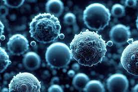
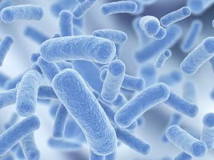

Tipos de bactérias
Existem diversos tipos de bactérias. Elas podem variar pelo seu formato, podendo ser bacilos (em formato de
bastão), cocos(formato esférico), espirilos (formato helicoidal e rígidas.)
Espiroquetas (formato helicoidal e flexíveis) ou Vibrião (formato de vírgula). Também podem variar de acordo com
sua relação com outros organismo, podendo ser benéficas, patogênicas e comensais.
| Benéficas |
Patogênicas |
Comensais |
| Melhoram a saúde |
Causam doenças |
Coexistência benigna |
| Contribuem para a fertilidade do solo |
Evadem o sistema imunológico |
Mantém um equilíbrio saudável |
| Fortalecem o sistema imunológico |
Produzem toxinas |
Manutreção do equilíbrio ecológico |
Bactérias benéficas
As bactérias benéficas exercem um papel fundamental na saúde humana e no ecossistema. Elas são aliadas
essenciais na manutenção do equilíbrio biológico, contribuindo, por exemplo, para a digestão eficiente e o
fortalecimento do sistema imunológico. Além disso, bactérias benéficas no solo desempenham um papel crucial na
fertilidade e na sustentabilidade dos ecossistemas terrestres. Portanto, essas pequenas organismos têm um grande
impacto positivo para os humanos e no mundo natural. Além disso, bactérias benéficas no solo desempenham um papel
crucial na fertilidade e na sustentabilidade dos ecossistemas terrestres. Portanto, essas pequenas organismos têm
um grande impacto positivo para as vidas humanas e no mundo natural.
- Bactérias Probióticas: Vivem no trato gastrointestinal e oferecem benefícios à saúde. Elas
ajudam na digestão, fortalecem o sistema imunológico e podem até mesmo competir com bactérias patogênicas,
impedindo sua proliferação. Exemplos incluem Lactobacillus e Bifidobacterium.
- Bactérias Fixadoras de Nitrogênio: Algumas bactérias benéficas têm a capacidade de converter
o nitrogênio atmosférico em uma forma utilizável pelas plantas. Isso é fundamental para a fertilidade do solo e
a produção de alimentos. Exemplos incluem Rhizobium, que forma simbiose com leguminosas.
- Bactérias de Decomposição: Desempenham um papel importante na reciclagem de matéria orgânica
morta e na manutenção do equilíbrio ecológico. Elas convertem matéria orgânica em nutrientes que podem ser
reutilizados pelas plantas. Essas bactérias são cruciais para a saúde do solo e dos ecossistemas.
Bactérias patogênicas

As bactérias patogênicas são microrganismos que têm a capacidade de causar doenças em seres humanos, animais e
até mesmo plantas. Elas representam uma das principais causas de infecções e doenças no mundo. Essas bactérias
possuem diversas estratégias para causar danos ao organismo hospedeiro, como a invasão tecidual, produção de
toxinas e evasão do sistema imunológico. Elas podem ser divididas em:
- Bactérias Causadoras de Doenças: São bactérias que podem causar infecções e doenças em seres
humanos e outros organismos. Elas têm a capacidade de se reproduzir rapidamente e invadir os tecidos
hospedeiros, desencadeando uma resposta imunológica. Exemplos incluem Escherichia coli patogênica e
Staphylococcus aureus.
- Bactérias Oportunistas: Algumas bactérias normalmente não patogênicas podem se tornar
patogênicas quando as defesas do organismo estão enfraquecidas, como em pessoas com sistemas imunológicos
comprometidos. Um exemplo é a bactéria Pseudomonas aeruginosa.
Bactérias comensais

Essas bactérias vivem em associação com organismos hospedeiros, como seres humanos, sem causar danos
significativos ou benefícios óbvios. Elas simplesmente coexistem no mesmo ambiente. Muitas bactérias na flora
normal do intestino humano são comensais.Embora as bactérias comensais geralmente não causem doenças, em algumas
situações, quando há uma mudança no equilíbrio normal dessas comunidades microbianas, podem ocorrer problemas de
saúde. Por exemplo, um desequilíbrio na microbiota intestinal pode levar a distúrbios como a síndrome do intestino
irritável. Portanto, elas desempenham um papel importante na manutenção da saúde do hospedeiro, ajudando a regular
o ambiente interno do corpo e a prevenir a colonização por bactérias patogênicas, além de desempenhar outras
funções benéficas ainda não totalmente compreendidas.